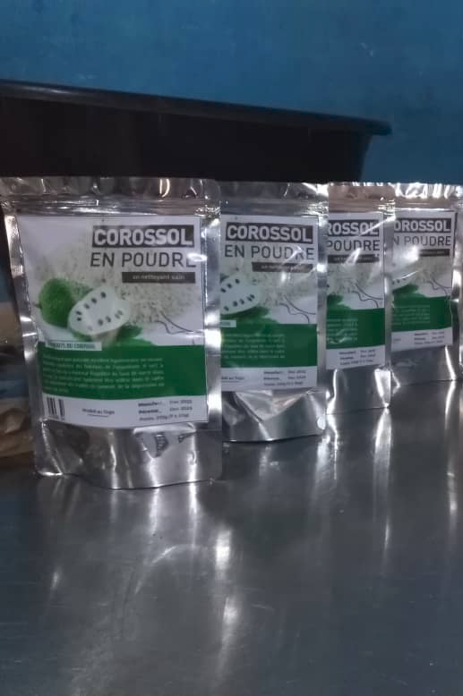
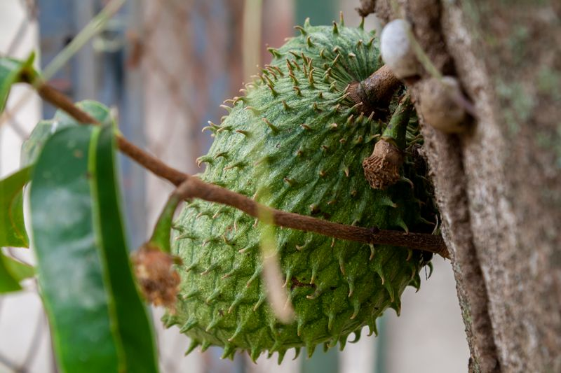

Thé de feuilles de corossol

Ceci est un prototype alpha de notre future page produit pour le Thé de Feuilles de Corossol. Nous testons actuellement la mise en page, le contenu et l'intégration multimédia pour garantir la meilleure expérience utilisateur possible. La vidéo ci-dessus démontre le processus de préparation et l'apparence du produit. Notre objectif est de créer une plateforme informative et visuellement engageante qui communique clairement les bienfaits, les utilisations traditionnelles et les méthodes de préparation de chaque produit à base de plantes. Vos retours durant cette phase alpha sont inestimables — ils nous aident à affiner la présentation, améliorer la navigation et garantir que chaque détail répond aux normes les plus élevées avant notre lancement officiel. Nous sommes engagés à livrer des produits de bien-être authentiques et de haute qualité d'Afrique de l'Ouest, et ce prototype représente notre dévouement à la transparence et au savoir-faire artisanal.


Notre Thé de Feuilles de Corossol est fabriqué à partir de feuilles soigneusement sélectionnées et séchées au soleil de l'arbre à corossol (Annona muricata), un arbre fruitier tropical originaire des Caraïbes et d'Amérique centrale. Les feuilles sont récoltées à maturité optimale par des agriculteurs locaux de nos régions partenaires au Togo et au Sénégal, puis séchées doucement en utilisant des méthodes traditionnelles pour préserver les composés aromatiques, les vitamines et les minéraux essentiels. L'infusion résultante est mélodieuse, légèrement acidulée, et convient à une consommation quotidienne. Chaque tasse offre un équilibre délicat de douceur naturelle et de complexité herbée subtile qui en a fait une boisson chérie en Afrique de l'Ouest pendant des générations.
Bénéfices pour la Santé & Soutien du Corps
Les feuilles de corossol contiennent des phytochimiques puissants, notamment les acétogénines, les alcaloïdes et les polyphenols qui fonctionnent de manière synergétique pour soutenir votre système immunitaire. Utilisées traditionnellement en médecine africaine de l'Ouest et caraïbe, les feuilles de corossol sont reconnues pour leur profil riche en antioxydants, qui aide à protéger les cellules du stress oxydatif et des lésions causées par les radicaux libres. Le thé soutient la santé digestive en favorisant l'équilibre sain de la flore intestinale et en apaisant l'inflammation du tube digestif. De nombreux utilisateurs rapportent une meilleure digestion, une réduction des ballonnements et un meilleur confort intestinal général après une consommation régulière.
Au-delà du soutien digestif, le thé de feuilles de corossol a été utilisé traditionnellement pour favoriser la relaxation et calmer l'activité du système nerveux, ce qui en fait un choix excellent pour une consommation en soirée ou en périodes de stress. Les composés naturels du thé aident à réduire la tension physique et à favoriser un sentiment de calme et de bien-être. De plus, le thé de corossol soutient les processus naturels de détoksication du corps en améliorant la fonction hépatique et en favorisant une élimination saine. Les feuilles contiennent des composés qui encouragent le corps à libérer les toxines emmagasinées de manière plus efficace. Une consommation régulière de ce thé peut contribuer à l'amélioration des niveaux d'énergie, de la clarté mentale et de la vitalité générale.
Les propriétés renforçantes du système immunitaire du thé de corossol sont particulièrement précieuses lors des changements de saison ou en périodes où un soutien immunitaire supplémentaire est nécessaire. La concentration élevée de vitamine C et d'autres antioxydants aide à renforcer les défenses naturelles de votre corps contre les stress environnementaux. De plus, le thé de corossol a été utilisé traditionnellement pour soutenir une réponse d'inflammation saine dans tout le corps, ce qui le rend bénéfique pour ceux qui recherchent un soutien au bien-être naturel. De nombreuses personnes intègrent ce thé dans leur routine quotidienne comme mesure préventive pour maintenir une santé optimale toute l'année. La nature douce mais efficace du thé le rend approprié pour une utilisation quotidienne par les adultes et les adolescents qui recherchent un soutien à la santé naturelle.
Comment Préparer
Sélectionnez des feuilles de corossol fraîches et nettoyez-les soigneusement en retirant les tiges et les parties abîmées. Pour une préparation optimale, utilisez les feuilles les plus vertes et les plus fraîches pour obtenir la meilleure saveur et les meilleures propriétés médicinales. Lavez les feuilles délicatement sous l'eau courante pour éliminer la saleté et les résidus, puis séchez-les avec un torchon propre. Dans la préparation traditionnelle, certaines cultures recommandent de froisser légèrement les feuilles pour libérer leurs essences avant l'infusion.
Portez de l'eau filtrée à une légère ébullition, en évitant une ébullition trop forte qui pourrait dégrader les composés délicats. Versez l'eau chaude sur les feuilles de corossol préparées dans une théière ou une grande tasse. Couvrez et laissez infuser 5 à 7 minutes, le temps que les saveurs imprègnent pleinement l'eau. Le processus d'infusion permet aux huiles naturelles et aux composés bénéfiques de se dissoudre dans l'eau, créant une infusion riche et aromatique.
Après l'infusion, filtrez soigneusement le liquide à l'aide d'une passoire fine ou d'une étamine pour retirer les particules de feuilles. Le thé obtenu doit avoir une saveur douce et légèrement acidulée avec une complexité herbacée subtile. Pour rehausser le goût, vous pouvez ajouter une touche de miel ou de jus de citron frais, qui complète la douceur naturelle et l'acidité du corossol tout en respectant les méthodes de préparation traditionnelles.
Consommez le thé tiède pour maximiser les bienfaits thérapeutiques. Les praticiens traditionnels recommandent de boire ce thé une fois par jour, de préférence le matin ou en fin d'après-midi, pour maintenir un soutien bien-être constant tout au long de votre routine quotidienne. Conservez le thé préparé au réfrigérateur et consommez-le dans les 24 heures pour une fraîcheur et une puissance maximales.
Pour ceux qui découvrent le thé de feuilles de corossol, commencez avec une plus petite quantité de feuilles et augmentez progressivement jusqu'à l'intensité souhaitée à mesure que vous vous habituez à son profil de saveur unique. Écoutez la réponse de votre corps et ajustez les méthodes de préparation en conséquence.
Ingédients
100% de feuilles de corossol séchées (Annona muricata) — Aucun additif, aucun conservateur, aucune saveur artificielle.